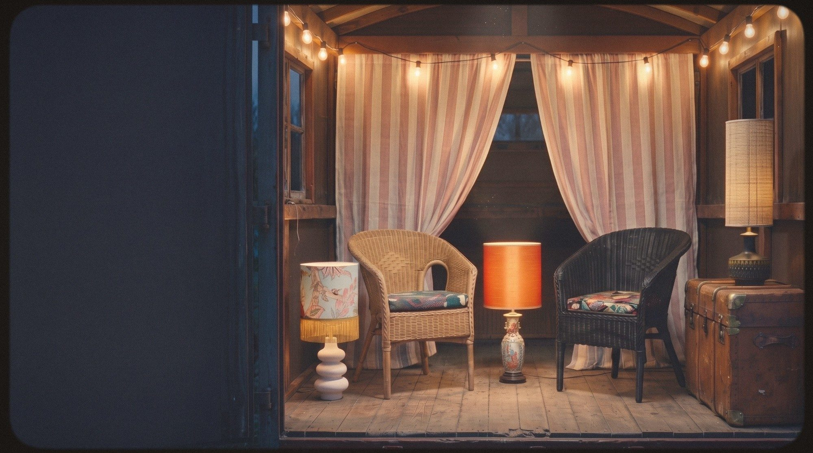

RotinBohème*
Seconde main pour premiers rôles
(12) À l'affiche
- ColetteFrangeslampe, abat-jour fleuri

- LucienCantonlampe, porcelaine et soie orange

- LéaRaphialampe, pied de grès

- OctaveOrphistelampe, pied noir sculpté

- AgnèsJunglelampe, pied bleu nuit

- GastonPatchworklampe, tissus assemblés

- ZéliePointilléslampe, abat-jour blanc

- DoñaFrida Kfauteuil, rotin noir

- HonoréNaturelfauteuil, rotin et coussin fleuri

- LudovicSoleilmiroir, métal doré

- MireilleBarbotinepichet, raisins en relief

- LesCabanonskids, bientôtbientôt

Rotin Bohème · À propos
La troupe des objets retrouvés
Quand j'étais petite, je voulais habiller le monde. Je dessinais des robes pour les chaises et je cousais des histoires aux ourlets des rideaux. Je croyais que tout pouvait devenir autre chose, pour peu qu'on lui en laisse l'occasion.
Ce matin, la troupe a repris la route.
Bernadette
Lire la suite du carnetLe programme dans ta boîte aux lettres
Les nouvelles recrues de la troupe et leurs histoires. Une lettre à la fois.